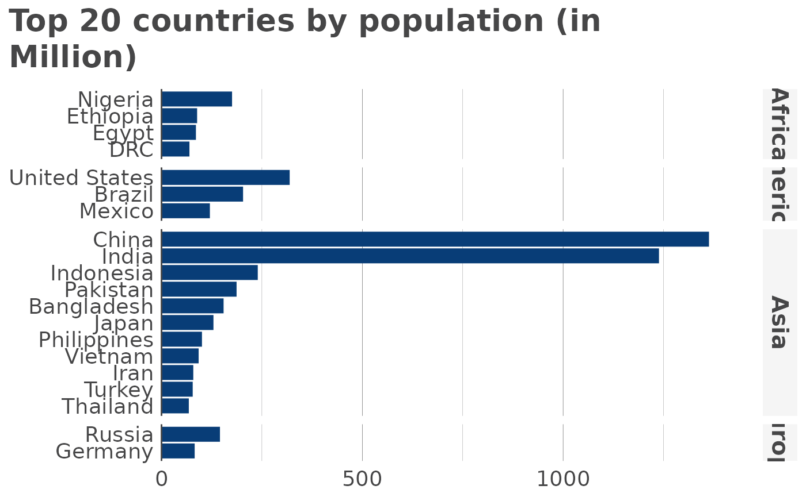

Let’s start by importing some data and running some data wrangling:
library(rio)
library(data.table)
dat <- import("https://raw.githubusercontent.com/holtzy/data_to_viz/master/Example_dataset/11_SevCatOneNumNestedOneObsPerGroup.csv", data.table = TRUE)
setDT(dat)
# in all character columns, tranform empty string to NA
vars_chr <- colnames(dat)[sapply(dat, is.character)]
dat[, (vars_chr) := lapply(.SD, function(x) fifelse(x == "", NA_character_, x)), .SDcols = vars_chr]
# in value, if -1 replace with NA
dat[, value := fifelse(value == -1, NA_real_, value)]
# remove lines where value is NA (in place)
dat <- dat[!is.na(value), ]
# kepp only top 20 values and divide data to get million units
df <- dat[
!is.na(value), ][
order(value, decreasing = TRUE), ][
1:20, ][
, value := value/1000000, ][
, key := ifelse(key == "Democratic Republic of the Congo", "DRC", key)]Now, let’s see the defaults for a horizontal bar diagram without any grouping and ordering values from highest to smallest:
library(visualizeR)
#>
#> Attaching package: 'visualizeR'
#> The following object is masked from 'package:data.table':
#>
#> %notin%
#> The following object is masked from 'package:grDevices':
#>
#> palette
hbar(
df,
x = "key",
y = "value",
facet = "region",
order = "y",
title = "Top 20 countries by population (in Million)"
)
Moving on to a vertical bar chart, with country facets and groups